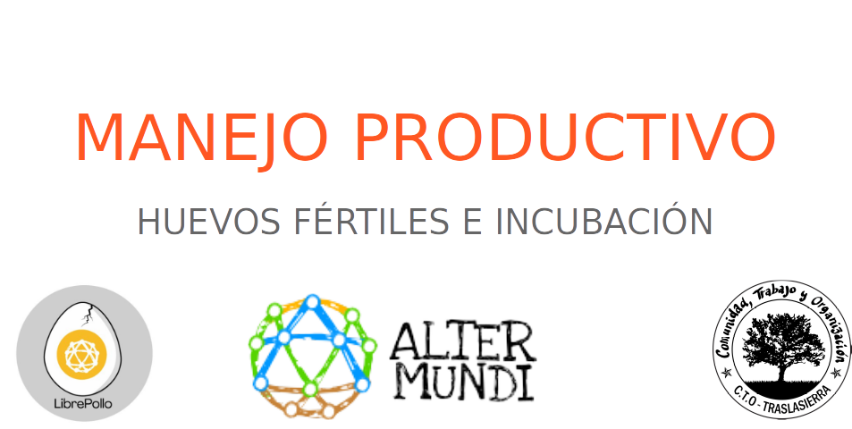
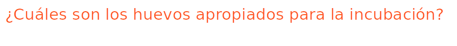
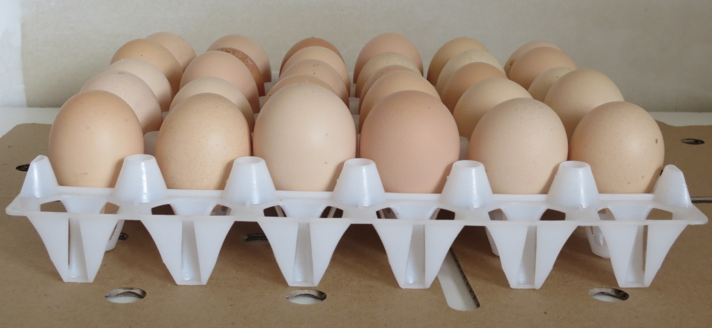
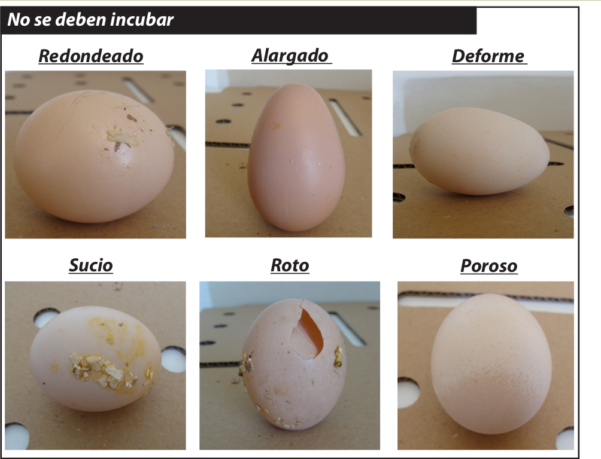
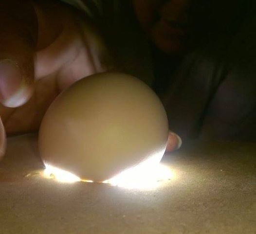
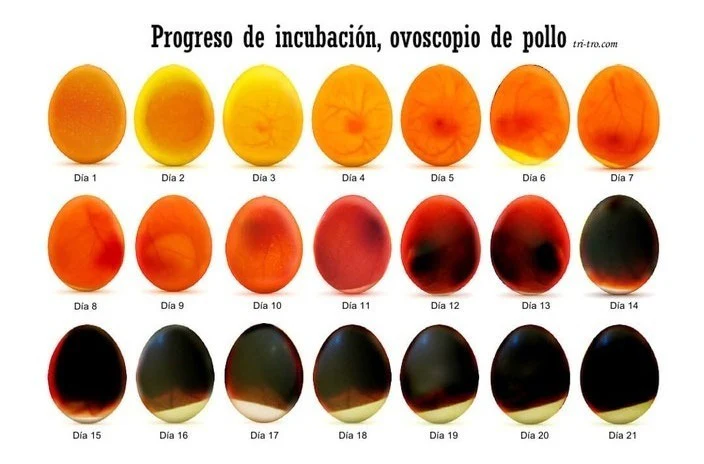
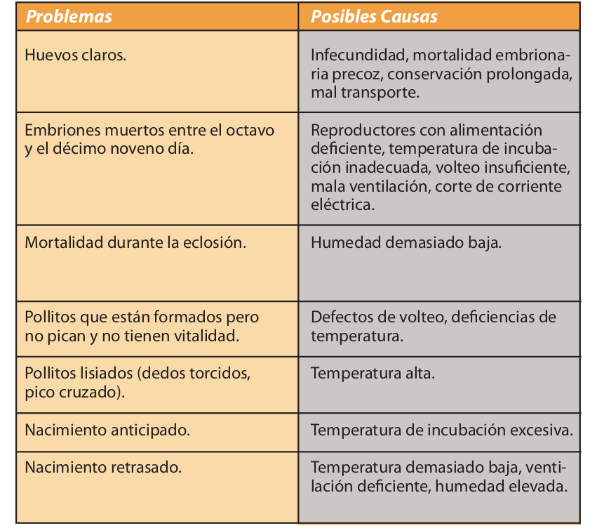

Recolectarlos al menos dos veces al día.
-
Seleccionar los más frescos posible, a lo sumo los recogidos en la semana previa a la incubación.
-
Almacenar en un maple nuevo o extremadamente limpio con el polo fino hacia abajo. (ver imagen)
-
Conservar los huevos a una temperatura entre 13 y 15 °C
Permanecer en reposo al menos por 24 hs. antes de comenzar con la incubación

Los mejores disponibles, considerando como huevo ideal Los que tienen forma ovoide.
-
Que no sean ni muy pequeños ni demasiados grandes.
-
Con un peso aproximado entre los 52 a 70 gramos.
Todos los huevos que se coloquen en la bandeja deben ser homogéneos, tanto en forma como en tamaño.
-
Deformes (muy redondos o puntiagudos).
-
Rotos, con la cáscara rugosa, muy porosa o frágil.
-
Sucios que estén recubiertos de excremen tos, o con otras sustancias, como restos de huevos que se rompieron en el nido
-
Recolectados del suelo.
Los huevos NUNCA DEBEN LAVARSE, porque pierden su capa protectora lo que facilita la entrada de bacterias durante el proceso de incubación.

-
Limpiar y desinfectar profundamente la in cubadora, lavar con una solución tibia de detergente y enjuagar con una solución desinfectante (ej. lavandina)
-
Secar previo a la carga. Nunca se debe iniciar un proceso de incubación con la incubadora muy mojada.
-
La incubadora debe estar a la misma temperatura que los huevos almacenados (23º) de ser posible. Ni fría ni caliente.
-
Incrementar la temperatura ambiental a 23 ºC durante las 18 horas previas a ponerlos a incubar, los huevos no deben ingresar fríos para evitar cambios bruscos de temperatura dentro de la incubadora y que el vapor de agua se condense en la cáscara y tapone sus poros.
-
Huevos con un peso entre 52 a 70 gramos. Iguales y limpios. No más de 7 días almacenados.
-
La incubadora a temperatura de 37,8 º C y humedad de 60 %. (Automático) Volteo de huevos 1 vez por hora (Automático)
- Antes, de ser posible, pasar por ovoscopio.

Nacedora:
-
Temperatura a 36.5ºC e incrementar la humedad a 70%-75% ( Automático)
-
Suspender el volteo la humedad a 40% una vez nacidos los pollitos (Automático)

- Ventilar es muy importante para proporcionar el oxígeno que el embrión va consumiendo y para eliminar el CO2 , la mejor es la denominada “forzada” que se consigue por medio de ventiladores, logrando que el aire esté durante todo el periodo incubación en movimiento.
-
Un buen nacimiento comienza el día 20.
-
Ante cortes de energía, se puede esperar hasta el día 22 máximo.
-
No deben permanecer más de 24 hs en la incubadora los pollitos.
-
Si están mojados, dejarlos cerca de una fuente de calor (lámpara o estufa)
Dejar en cajón de recría por lo menos 2 semanas con fuente de calor.
-
Retirar todas las cáscaras de huevo, plumas y polvo, protegiéndose con elementos de seguridad tales como antiparras, barbijo y guantes descartables.
-
Limpiar en seco primero, y luego desinfectar profundamente la incubadora. Se debe lavar con una solución caliente de detergente y enjuagar con una solución desinfectante (amonio cuaternario o lavandina por ejemplo) y dejar ser
